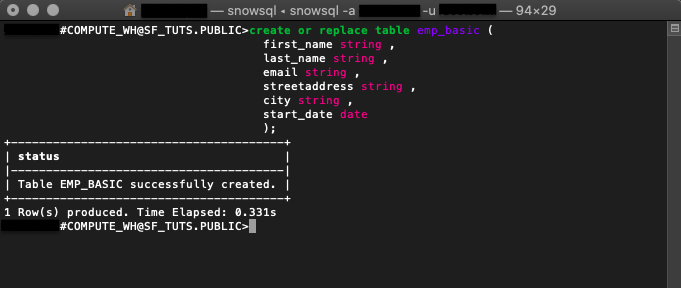

SnowSQL은 Snowflake와 상호 작용하기 위해 사용되는 소프트웨어 CLI 도구입니다. SnowSQL을 사용하여 Snowflake Data Cloud의 모든 측면을 제어할 수 있습니다. 여기에는 데이터 업로드, 데이터 쿼리, 데이터 변경 및 데이터 삭제가 포함됩니다. 이 가이드에서는 SnowSQL을 검토하고 이를 사용하여 데이터베이스를 생성하고, 데이터를 로드하고, CLI에서 바로 테이블 및 데이터를 관리하는 데 유용한 명령을 배울 수 있습니다.
사전 필요 조건 및 지식
- 짧은 Snowflake 소개 동영상
- Snowflake 데이터 로딩 기본 사항 동영상
학습할 내용
- Snowflake 계정 생성 방법
- 로컬에서 SnowSQL 설치 방법
- 클라우드 데이터베이스 및 테이블 설정 방법
- 가상 웨어하우스 생성 방법
- 샘플 데이터를 클라우드로 마이그레이션하는 방법
- 클라우드 데이터 쿼리 방법
- 추가 데이터 삽입 방법
- 데이터베이스 오브젝트 삭제 및 SnowSQL 연결 종료 방법
시작하기 전에 필요한 컴퓨팅 요구 사항을 확인하시기 바랍니다. 또한 이 자습서를 완료하기 위해 샘플 파일을 다운로드하고 추후 사용을 위해 폴더 위치를 기록하십시오.
필요한 것
- 로컬 브라우저 및 운영 체제 요구 사항
- 샘플 데이터 파일 다운로드
구축할 것
- 클라우드 호스트와 연결 및 SnowSQL로 데이터 관리
Snowflake 계정 생성
Snowflake는 무료로 Snowflake 서비스를 이용해 볼 수 있도록 평가판 계정을 제공합니다.
Snowflake의 웹 콘솔 액세스
https://
브라우저에서 웹 인터페이스에 로그인합니다. URL은 여러분의 계정 이름과 잠재적으로 지역을 포함합니다.
계정 권한 확장
Snowflake의 웹 인터페이스는 다양한 기능을 제공하지만 지금은 계정 역할을 기본값인 SYSADMIN에서 ACCOUNTADMIN으로 전환하기만 하겠습니다. 이 권한 확장을 통해 사용자 계정은 오브젝트를 생성할 수 있습니다.

SnowSQL 설치 프로그램 다운로드
SnowSQL을 Linux, Windows 또는 Mac에 다운로드하고 설치할 수 있습니다. 이 예에서는 AWS 엔드포인트를 통해 macOS를 위해 설치 프로그램을 다운로드하겠습니다. 다른 운영 체제를 사용하고 있거나 다른 방법을 선호한다면 SnowSQL을 설치하는 모든 방법을 여기에서 확인하십시오.
curl -O https://sfc-repo.snowflakecomputing.com/snowsql/bootstrap/<bootstrap-version>/darwin_x86_4/snowsql-<snowsql-version>-darwin_x86_64.pkg
및
아래 예는 macOS를 위해 부트스트랩 버전 1.2 및 SnowSQL 버전 1.2.9를 다운로드하기 위한 AWS 엔드포인트에 대한 cURL 명령입니다.
curl -O https://sfc-repo.snowflakecomputing.com/snowsql/bootstrap/1.2/darwin_x86_64/snowsql-1.2.9-darwin_x86_64.pkg

로컬에서 SnowSQL 설치
- 설치 프로그램 파일을 두 번 클릭하고 마법사 프롬프트를 따릅니다.
$ snowsql -v버전을 확인하여 성공적으로 설치되었는지 확인합니다.- 컴퓨터를 재부팅하고 필요하다면 다시 확인합니다.
이러한 단계를 완료하면 SnowSQL을 사용하여 다음 섹션에서 데이터베이스를 만들 준비가 된 것입니다.
터미널에서 로그인
snowsql -a <account-name> -u <username>
-a 플래그는 Snowflake 계정을 나타내며 -u 플래그는 사용자 이름을 나타냅니다.
데이터베이스 및 스키마 생성
create or replace database sf_tuts;
CREATE TABLE 또는 REPLACE TABLE 명령은 새로운 데이터베이스를 만들며 ‘public' 스키마를 자동으로 생성합니다. 이는 또한 여러분의 현재 세션을 위해 새로운 데이터베이스를 활성 상태로 만듭니다.
데이터베이스가 여러분의 현재 세션에서 사용되고 있는지 확인하려면 다음을 실행합니다.
select current_database(),
current_schema();
테이블 생성
create or replace table emp_basic ( first_name string , last_name string , email string , streetaddress string , city string , start_date date );
CREATE TABLE 또는 REPLACE TABLE을 실행하면 지정된 매개 변수에 따라 새로운 테이블이 구축될 것입니다. 이 예는 샘플 CSV 직원 데이터 파일에 있는 동일한 열을 반영합니다.

가상 웨어하우스 생성
create or replace warehouse sf_tuts_wh with warehouse_size='X-SMALL' auto_suspend = 180 auto_resume = true initially_suspended=true;
생성한 후 이 가상 웨어하우스는 여러분의 현재 세션을 위해 활성 상태가 되며 컴퓨팅 리소스가 필요해지면 실행됩니다.

데이터베이스 오브젝트가 준비되었다면 SnowSQL을 사용하여 샘플 데이터를 emp_basic 테이블로 이동하겠습니다.
아직 샘플 파일을 다운로드하지 않았다면 다음에서 다운로드할 수 있습니다.
PUT을 통해 파일 스테이징
Linux
put file:///tmp/employees0*.csv @<database-name>.<schema-name>.%<table-name>;
Windows
put file://c:\temp\employees0*.csv @sf_tuts.public.%emp_basic;
file은 스테이징할 파일의 로컬 파일 경로를 지정합니다. 파일 경로는 운영 체제별로 다릅니다.@은 스테이징된 파일이 향하는 특정 데이터베이스, 스키마 및 테이블입니다.. .% - 데이터베이스 전에 있는
@기호와@sf_tuts.public스키마 이름은 파일이 외부 스테이지가 아닌 내부 스테이지에 업로드됨을 나타냅니다.%emp_basic테이블 이름 전에 있는%기호는 사용되고 있는 내부 스테이지가 테이블을 위한 스테이지임을 나타냅니다. 스테이지에 대한 더 자세한 정보는 Local File System에서 Staging Data Files를 확인하십시오.
put file:///tmp/employees0*.csv @sf_tuts.public.%emp_basic;
macOS file:///tmp/ 폴더의 샘플 직원 CSV 파일을 sf_tuts 데이터베이스 내에 있는 emp_basic 테이블로 스테이징하기 위한 PUT 호출입니다.

스테이징된 파일 LIST
list @<database-name>.<schema-name>.%<table-name>;
스테이징된 파일을 확인하기 위해 list 명령을 실행합니다.
list @sf_tuts.public.%emp_basic;
위 예시 명령은 emp_basic 테이블을 위해 스테이징된 파일을 출력하기 위한 것입니다. 더 많은 LIST 구문은 여기에서 자세히 알아보십시오.

테이블로 COPY INTO
copy into emp_basic
from @%emp_basic
file_format = (type = csv field_optionally_enclosed_by='"')
pattern = '.*employees0[1-5].csv.gz'
on_error = 'skip_file';
파일을 스테이징한 다음 데이터는 emp_basic 테이블로 복사됩니다. 이 DML 명령은 또한 이전에 만든 가상 웨어하우스를 자동으로 재개합니다.

출력은 데이터가 성공적으로 복사되었으며 모든 오류를 기록하는지를 나타냅니다.
클라우드에 있는 데이터를 쿼리하는 방법을 알아야 합니다. 여러분의 데이터를 빠르게 호출할 수 있도록 하는 몇몇 호출을 다루겠습니다.
*와일드카드 앞에 있는select명령은
select * from emp_basic;
다음 예시 명령은 emp_basic 테이블에 있는 모든 것을 대상으로 select 명령을 수행합니다.

테이블에 있는 모든 데이터를 살피는 것은 가장 효율적으로 시간을 사용하는 방법이 아닙니다. 몇몇 함수와 일부 쿼리 구문을 사용하면 특정 결과를 간단히 가져올 수 있습니다.
- WHERE는 선택 쿼리에 추가할 수 있는 추가 절입니다.
select * from emp_basic where first_name = 'Ron';
이 쿼리는 emp_basic 테이블에서 first_name이 ‘Ron'인 직원 목록을 반환합니다.

- LIKE 함수는
%및_와일드카드를 지원합니다.
select email from emp_basic where email like '%.au';
LIKE 함수는 au를 위해 emp_basic 테이블에 있는 모든 이메일을 확인하며 레코드를 반환합니다.

Snowflake는 다양한 함수, 연산자 및 명령을 지원합니다. 그러나 보다 구체적인 작업을 수행해야 한다면 외부 함수 설정을 고려하십시오.
종종 데이터는 고정적이지 않습니다. 여러분의 클라우드 데이터베이스를 유지하기 위한 몇몇 일반적인 방법을 검토하겠습니다.
HR에서 또 다른 직원을 고용한 후에 CSV 파일을 업데이트한다면 모든 CSV를 다운로드하고 스테이징하고 복사하는 것은 지루할 것입니다. 대신 단순하게 새로운 직원 정보를 대상 테이블에 삽입합니다.
데이터 삽입
INSERT는 테이블을 추가 값으로 업데이트할 것입니다.
insert into emp_basic values
('Clementine','Adamou','cadamou@sf_tuts.com','10510 Sachs Road','Klenak','2017-9-22') ,
('Marlowe','De Anesy','madamouc@sf_tuts.co.uk','36768 Northfield Plaza','Fangshan','2017-1-26');
오브젝트 삭제
표시된 명령에서 insert는 2명의 새로운 직원을 emp_basic 테이블에 추가하기 위해 사용됩니다.

- DROP 오브젝트는 더 이상 사용되지 않습니다.
drop database if exists sf_tuts;
drop warehouse if exists sf_tuts_wh;
이 자습서에서 기본 사항을 연습한 후에는 sf-tuts 데이터베이스와 웨어하우스가 더 이상 필요하지 않습니다. 이를 모두 삭제하려면 drop 명령을 사용합니다.
!exit또는!disconnect로 연결 종료
보안상의 이유로 여러분의 터미널 연결을 불필요하게 유지하는 않는 것이 좋습니다. SnowSQL 연결을 종료할 준비가 되었다면 단순히 !exit를 입력합니다.
애플리케이션을 위해 SnowSQL 사용
Snowflake 계정을 생성했고, 컴퓨팅 리소스로 클라우드 데이터베이스를 설정했고, SnowSQL을 통해 클라우드로 데이터를 마이그레이션했습니다. 잘하셨습니다! 클라우드를 사용하면 많은 이점을 누릴 수 있습니다. 이제 Snowflake를 시작하는 것이 얼마나 쉬운지 알게 되었으니 다음 단계를 고려할 시간입니다.
SnowSQL을 통한 데이터 로딩에 대해 잘 알고 있으니 이를 사용하여 여러분의 애플리케이션을 실행하십시오. SnowSQL을 통해 애플리케이션 개발을 계속하여 Python 애플리케이션과 여러분의 데이터를 연결하는 방법을 알아보십시오. 애플리케이션 데이터가 이미 있다면 emp_basic 테이블을 완료하기 위해 사용했던 단계를 통해 이를 클라우드로 마이그레이션하는 것을 고려하십시오. Snowflake의 도구 및 설명서는 광범위하며 클라우드 컴퓨팅의 위력을 여러분에게 선사합니다.
다룬 내용
- SnowSQL 설정
- SnowSQL을 사용하여 데이터 업로드
- SnowSQL을 사용하여 데이터 쿼리
- SnowSQL을 사용하여 데이터 관리 및 삭제